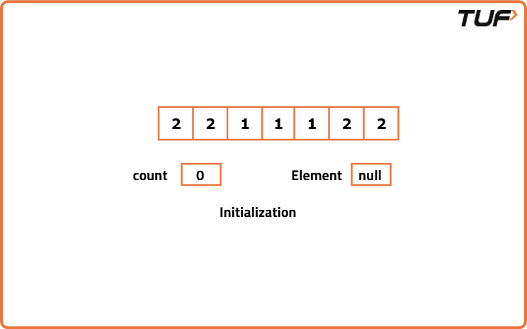
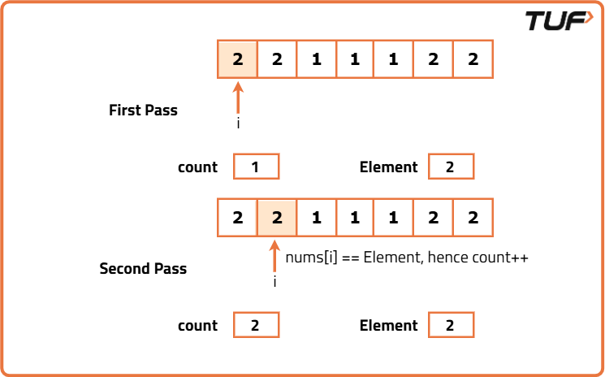
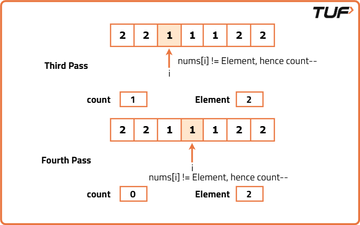
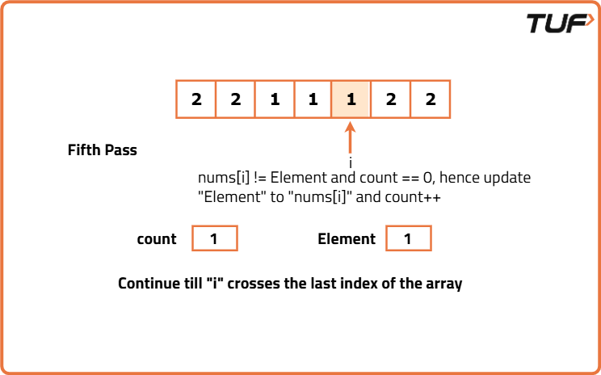
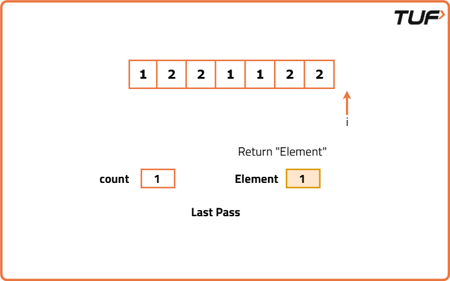

Find the Majority Element that occurs more than N/2 times
Problem Statement:
Given an integer array nums of size n, return the majority element of the array.
The majority element of an array is an element that appears more than n/2 times in the array. The array is guaranteed to have a majority element.
Examples
Example 1: Input: nums = [7, 0, 0, 1, 7, 7, 2, 7, 7] Output: 7 Explanation: The number 7 appears 5 times in the 9-sized array, making it the most frequent element. Example 2: Input: nums = [1, 1, 1, 2, 1, 2] Output: 1 Explanation: The number 1 appears 4 times in the 6-sized array, making it the most frequent element.
Disclaimer: Here is the practice link to help you assess your knowledge better. It's highly recommend trying to solve it before looking at the solution.
Brute Force
Algorithm
- Iterate through the array to select each element one by one.
- For each selected element, run another loop to count its occurrences in the given array.
- If the occurrence of any element is greater than the floor of
(N/2), return that element immediately as the majority element.
Code
#include <bits/stdc++.h>
using namespace std;
class Solution {
public:
// Function to find the majority element in an array
int majorityElement(vector<int>& nums) {
// Size of the given array
int n = nums.size();
// Iterate through each element of the array
for (int i = 0; i < n; i++) {
// Counter to count occurrences of nums[i]
int cnt = 0;
// Count the frequency of nums[i] in the array
for (int j = 0; j < n; j++) {
if (nums[j] == nums[i]) {
cnt++;
}
}
// Check if frequency of nums[i] is greater than n/2
if (cnt > (n / 2)) {
// Return the majority element
return nums[i];
}
}
// Return -1 if no majority element is found
return -1;
}
};
int main() {
vector<int> arr = {2, 2, 1, 1, 1, 2, 2};
// Create an instance of Solution class
Solution sol;
int ans = sol.majorityElement(arr);
// Print the majority element found
cout << "The majority element is: " << ans << endl;
return 0;
}Complexity Analysis
Time Complexity: O(N^2), where N is the size of the input array. This is because we are using a nested loop to count the occurrences of each element.
Space Complexity: O(1), as we are using a constant amount of space for the counters and indices.
Better Approach
Algorithm
- Use a hashmap to store elements as
(key, value)pairs, where the key is the element of the array and the value is the number of times it occurs. - Traverse the array and update the value of the corresponding key in the hashmap.
- Simultaneously check if the value (the count) of any key is greater than the floor of
(N/2). - If the value is greater than the floor of
(N/2), return the key immediately as the majority element. - If no majority element is found, continue iterating through the array.
Code
#include <bits/stdc++.h>
using namespace std;
class Solution {
public:
// Function to find the majority element in an array
int majorityElement(vector<int>& nums) {
// Size of the given array
int n = nums.size();
// Hash map to store element counts
unordered_map<int, int> mp;
// Count occurrences of each element
for (int num : nums) {
mp[num]++;
}
/* Iterate through the map to
find the majority element*/
for (auto& pair : mp) {
if (pair.second > n / 2) {
return pair.first;
}
}
// Return -1 if no majority element is found
return -1;
}
};
int main() {
vector<int> arr = {2, 2, 1, 1, 1, 2, 2};
// Create an instance of Solution class
Solution sol;
int ans = sol.majorityElement(arr);
// Print the majority element found
cout << "The majority element is: " << ans << endl;
return 0;
}
Complexity Analysis
Time Complexity: O(N), where N is the size of the input array. This is because we are iterating through the array once to count occurrences and then iterating through the hashmap to find the majority element.
Space Complexity: O(N), as we are using a hashmap to store the counts of each element, which can take up to N space in the worst case.
Optimal Approach
Algorithm
- Initialize two variables:
countto track the count of elements, andelementto keep track of the element being counted. - Traverse through the given array. If
countis 0, store the current value of the array aselement. - If the current element in the array is the same as
element, increment thecountby 1. - If the current element is different from
element, decrement thecountby 1. - At the end of the traversal, the integer stored in
elementwill be the expected result (the majority element).





Code
#include <bits/stdc++.h>
using namespace std;
class Solution {
public:
// Function to find the majority element in an array
int majorityElement(vector<int>& nums) {
// Size of the given array
int n = nums.size();
// Count
int cnt = 0;
// Element
int el;
// Applying the algorithm
for (int i = 0; i < n; i++) {
if (cnt == 0) {
cnt = 1;
el = nums[i];
} else if (el == nums[i]) {
cnt++;
} else {
cnt--;
}
}
/* Checking if the stored element
is the majority element*/
int cnt1 = 0;
for (int i = 0; i < n; i++) {
if (nums[i] == el) {
cnt1++;
}
}
//return element if it is a majority element
if (cnt1 > (n / 2)) {
return el;
}
//return -1 if no such element found
return -1;
}
};
int main() {
vector<int> arr = {2, 2, 1, 1, 1, 2, 2};
// Create an instance of Solution class
Solution sol;
int ans = sol.majorityElement(arr);
// Print the majority element found
cout << "The majority element is: " << ans << endl;
return 0;
}
Complexity Analysis
Time Complexity: O(N), where N is the size of the input array. This is because we are iterating through the array once to find the potential majority element and then again to verify it.
Space Complexity: O(1), as we are using only a constant amount of extra space.